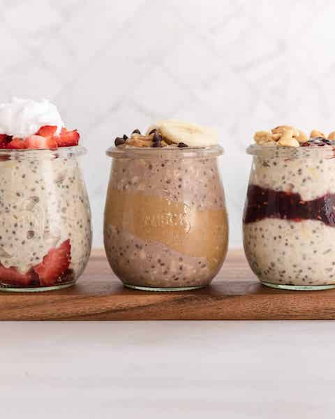

High Protein Overnight Oats

The breakfast I ate every morning for 2 years!
Easily one of my top favourite breakfasts. It consists of 43g of protein, so you can't go wrong when trying to hit your macros!
These overnight oats are easy to make and will keep you full until lunch! If you like the recipe, please let me know!
Ingredients
- 50g Oats
- 10g Cocoa
- 13g PB2
- 15g Casein
- 150g Skyr
- 100g Water
Instructions
- Combine all ingredients in a bowl
- Make sure all the ingredients are stirred well
- Top with optional walnuts or other nuts of your choice
- Put in the fridge and leave until morning
- Wake up and enjoy!